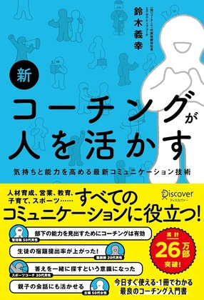

まず、本の話この本を書いた人
著者の鈴木義幸さんは、広告代理店（マッキャンエリクソン博報堂）に勤めたあとアメリカに渡って、大学院で臨床心理学を修めた人です。帰国して1997年にコーチングの会社の設立に参加し、いまはコーチ・エィという会社の経営に関わっています。200人を超える経営者にコーチングをしてきたそうです。
広告 → 臨床心理学 → 経営者のコーチ。そういう経歴の人が書いた本です。
『新 コーチングが人を活かす』は、2000年に出た本の、20年ぶりの大幅改訂版。冒頭に、なぜコーチングが必要になったのかが3つ挙げられています。
- 01簡単に正解を見つけることのできない課題の増加
- 02多様性の拡大
- 03イノベーションの必要性
この3つは20年前からあったけれど、強度が明らかに増していると書かれています。上の人が答えを持っていて下に教える、という形が成り立たなくなってきた。だから「教える」ではなく「一緒に探す」ための技術がいる。それがこの本の立ち位置です。
例として出てくるのは、会社だけではありません。スポーツチーム、病院、学校、家庭。病院の例だと、医師・看護師・薬剤師がチームを組んで、患者さんにとって何が最適かを探していく話が出てきます。医師が一人で「この処置で大丈夫」と決められることばかりではない。職種によって立場も考え方も違う。
要するに、答えを一人で持てない場面なら、どこでも同じということのようです。
本文からほめ方には2種類ある
今回取り上げるのは、SKILL 20「アクノレッジメント ── "I"の立場でほめる」という一項目です。
コーチングでは、相手をほめたり認めたりすることを「アクノレッジメント」と呼ぶそうです。そしてそれは、どの立場から言うかで2つに分かれる、と書かれていました。
ひとつは 「You」の立場。「よくやった」「やればできるじゃないか」。つまり「あなたはこうだ」と相手に伝える言い方。
もうひとつは 「I」の立場。相手が自分にどういう影響を与えたかを言葉にする。
「きみががんばっているのを見ていると、僕もやる気が高まるよ」
新 コーチングが人を活かす／鈴木義幸（ディスカヴァー・トゥエンティワン）
本には、Youの承認はそれ自体が評価と受け取られることがある、と書かれています。言われた側が「いや、そうでもないですけど」と返してしまう、あれです。
私の気づき矢印の向きが、逆だった
この2つを並べて書いてみて、気づいたことがあります。
「さすが」は、その人の結果についての話です。だから、その人のところで終わる。渡して終わり。
「助かった」のほうには、あなたの行動が、私に届いたという情報が乗っています。
つまり IとYouの差は、「相手にどう影響を与えるか」の差でした。ほめ方の種類の話だと思って読んでいたのですが、そうではなかった。
もう少し深掘ってみたほめられた脳は何を受け取るか
本当にそうなのか気になって、もう少し深掘ってみました。研究が2つ見つかりました。
ほめられること自体が、報酬として扱われている
19人を対象にした脳の研究で、良い評判を得たときに、お金をもらったときと同じ場所（線条体）が反応したと報告されています。研究者はこれを「報酬の共通通貨」と呼んでいます。
出典: Izuma, Saito & Sadato (2008), Neuron. 19人という小さな実験なので、これだけで言い切れるものではありません。
効いていたのは「うまくやれた」ではなく「役に立てた」
「ありがとう」と言われた人が、そのあともう一度手助けをするかどうかを調べた研究です。感謝を伝えられたグループは、手助けを繰り返した割合が25%から55%へ、別の実験では32%から66%へと、おおよそ倍になったと報告されています。
研究者は、その理由として2つの可能性を比べています。
- 仮説A「自分はこれが得意だ」と思えたから（有能感）
- 仮説B「自分は誰かにとって価値がある」と思えたから（social worth）
その後の行動を説明できたのは、Bのほうだったと報告されています。うまくやれた、ではなく、誰かの役に立てた。
出典: Grant & Gino (2010), Journal of Personality and Social Psychology. 心理学の実験なので、そのまま現場に当てはまるとは限りません。
「さすが」はAの話をしていて、「助かった」はBの話をしている。そういうことのようです。
現場に置いてみるソードワンでいうと
ただ、「さすが」って言われて素直に嬉しい人、いますよね。
ソードワンはコミュニケーションカードをやっているので、響く言葉が人によってまるで違うのは分かっています。研修で教わった色別の言葉は、こうでした。
| 色 | やる気が上がる言葉 | 逆に、効かない言葉 |
|---|---|---|
| 赤 結果にコミット |
「君に任せた」「君しかできない」「期待している」「さすが」「ついていきます」 | 「みんなで決めて」「周りに気を遣え」、プロセスの細かい指示 |
| 黄 ワクワク大好き |
「面白い」「すごい」「最高」「自由にやって」「いいアイデア」 | 「つまらない」「普通」「空気を読んで」「計画通りに」 |
| 緑 仲間とみんなで |
「一緒にやろう」「助かるよ」「〇〇さんのおかげ」「あなたでよかった」 | 「自分で決めて」「必ず結果出せ」、人前での叱責、そして無反応 |
| 青 ロジカルで堅実 |
「理にかなっている」「正確だね」「分析力がすごい」など、質を具体的にほめる | 「まず動け」「とりあえずやってみよう」「ざっくりでいい」 |
出典: 社内研修「コミュニケーションカード × PEPトーク」（一般社団法人コミュニケーションカード実践協会／カード開発: 株式会社アライブ・ワン）で教わった内容より。
「さすが」は赤に効く言葉として載っていて、「助かるよ」は緑に効く言葉として載っています。どちらも正解で、向いている相手が違うだけ。
なので、やめる必要はなさそうでした。足せばいい。
店舗に行って、「今日も頑張ってるじゃん」で終わってしまうことがあります。
一言足すなら、こうなります。
「さっきの案内の仕方、雰囲気すごい良かったね。あの笑顔と声のトーン、私も真似してみようと思った」
読んでいて、改めて感じたこと本に書いてあるのは、手段のほう
読んでいて改めて感じたのは、これはテクニックとして使っても意味がない、ということ。
当たり前の話ではありますが、このような本を読むときほど、その当たり前を大前提に置きながら熟読しようと思いました。
普段から、人のいいところを探す。感謝できるところを探す。まずそこを育てることが重要で、本に書いてあるスキルのほうは、そこにさらに磨きをかけて、相手により良く伝わるようにするための手段なんだと思います。
いままでもらった言葉で、いちばん残っているものは何ですか？
それは「あなたはすごい」でしたか。それとも「あなたのおかげで」でしたか。

今回ふれたのは SKILL 20「アクノレッジメント」です
書影：ディスカヴァー・トゥエンティワン